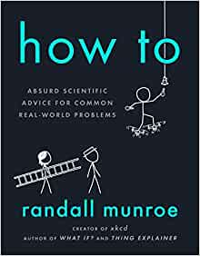

How To, by Randall Munroe
Wednesday January 1, 2020
"How To" is essentially more "What If?" (blog/book). It's an excuse for Munroe to talk about interesting things, and it's great. Here are some things I thought were neat:
In "How to Keep Your House from Moving," I learned that you really can't, because of tectonic plates. Keeping track of where things are is surprisingly hard! If you use latitude and longitude, your location will become incorrect as plates move. This is part of why different localities use their own local coordinate systems, which has frustrated me in the past in part because I didn't see any reason for them to do that.
In "How to Play Tag," I learned that Usain Bolt's agent told The New Yorker that Bolt has never run a mile. That's Munroe's careful phrasing, which I appreciate, but it's also just interesting to think about that level of specialization. I tend to value generalization, or cross-training, but it may not always be necessary.
In "How to Power Your House (On Earth)," I learned that switchgrass is a really cool plant, and that Betz's law says that wind turbines can't capture more than 16/27 of wind energy because the wind has to keep moving or the turbine won't keep working.
On page 274 it says that UTC is "from its French acronym," which isn't quite right, and the real story is much more fun. But in general the book seems basically correct in its wild order-of-magnitude flights of fancy, and it's a darn good time.
